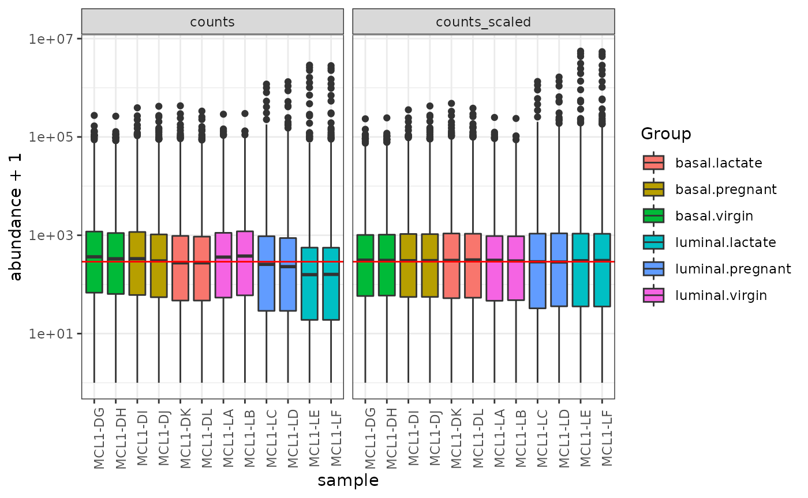
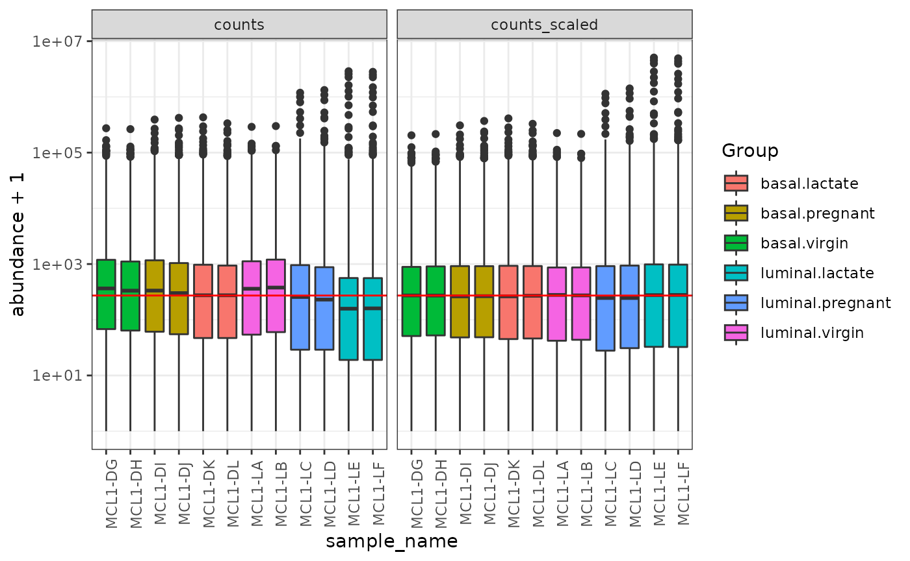
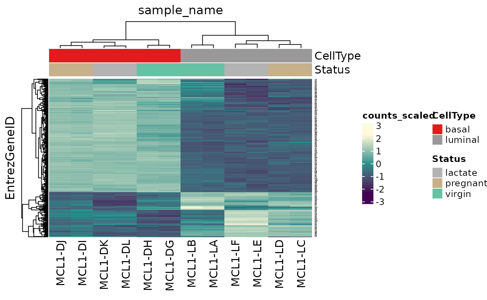
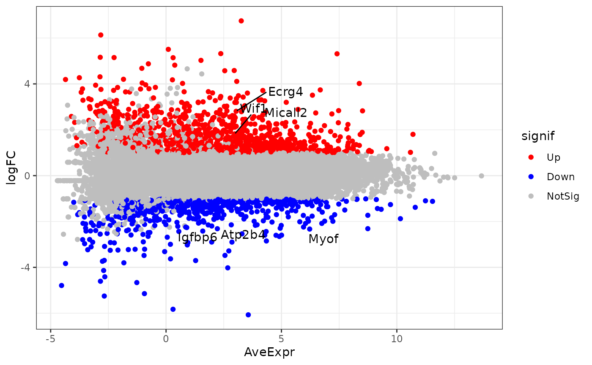
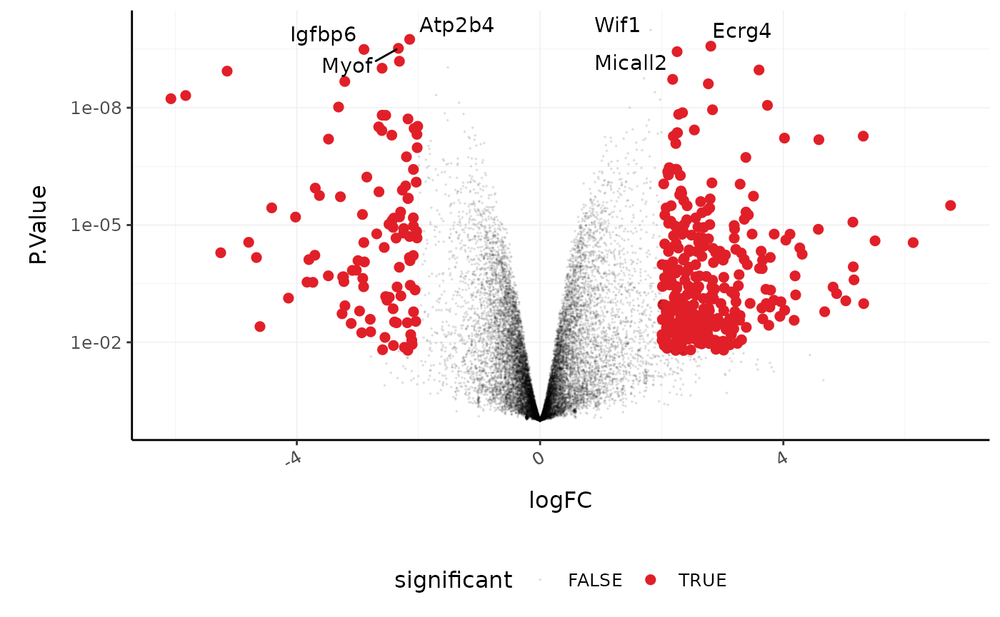
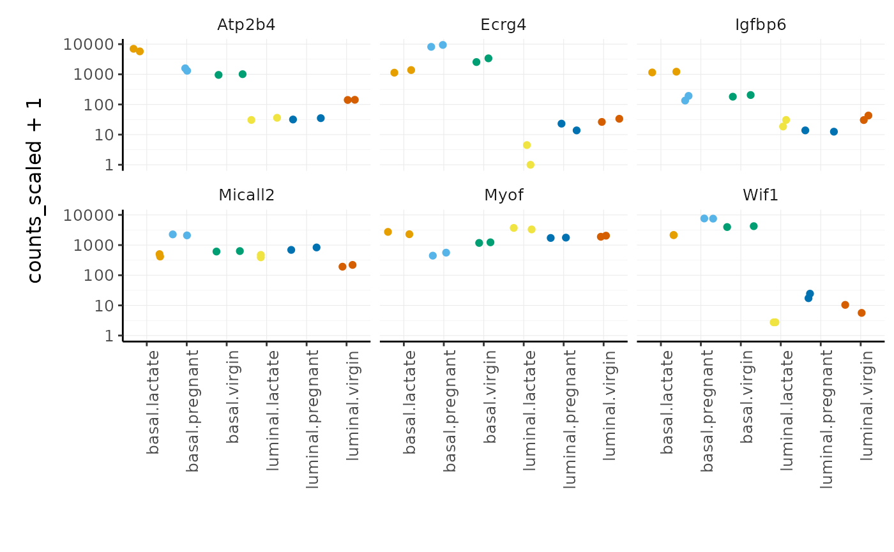

RNAseq-R-tidyverse
Maria Doyle, Peter MacCallum Cancer Centre1
Stefano Mangiola, Walter and Eliza Hall Institute2
14 July 2021
Source:vignettes/tidytranscriptomics.Rmd
tidytranscriptomics.RmdThis material presents how to perform analysis of RNA sequencing data following the tidy data paradigm [@wickham2014tidy]. The tidy data paradigm provides a standard way to organise data values within a dataset, where each variable is a column, each observation is a row, and data is manipulated using an easy-to-understand vocabulary. Most importantly, the data structure remains consistent across manipulation and analysis functions.
This can be achieved for RNA sequencing data with the tidybulk[@Mangiola2021], tidyHeatmap [@mangiola2020tidyheatmap] and tidyverse [@wickham2019welcome] packages. The tidybulk package provides a tidy data structure and a modular framework for bulk transcriptional analyses. tidyHeatmap provides a tidy implementation of ComplexHeatmap. These packages are part of the tidytranscriptomics suite that introduces a tidy approach to RNA sequencing data representation and analysis
Introduction and data import
Measuring gene expression on a genome-wide scale has become common practice over the last two decades or so, with microarrays predominantly used pre-2008. With the advent of next generation sequencing technology in 2008, an increasing number of scientists use this technology to measure and understand changes in gene expression in often complex systems. As sequencing costs have decreased, using RNA sequencing to simultaneously measure the expression of tens of thousands of genes for multiple samples has never been easier. The cost of these experiments has now moved from generating the data to storing and analysing it.
There are many steps involved in analysing an RNA sequencing dataset. Sequenced reads are aligned to a reference genome, then the number of reads mapped to each gene can be counted. This results in a table of counts, which is what we perform statistical analyses on in R. While mapping and counting are important and necessary tasks, today we will be starting from the count data and showing how differential expression analysis can be performed in a friendly way using the Bioconductor package, tidybulk.
First, let’s load all the packages we will need to analyse the data.
Note: you should load the tidybulk library after the tidyverse core packages for best integration.
# load libraries
library(tibble)
library(dplyr)
library(tidyr)
library(readr)
library(stringr)
library(ggplot2)
library(plotly)
library(ggrepel)
library(EGSEA)
library(tidyHeatmap)
library(tidybulk)Plot settings. Set the colours and theme we will use for our plots.
# Use colourblind-friendly colours
friendly_cols <- dittoSeq::dittoColors()
# Set theme
custom_theme <-
list(
scale_fill_manual(values = friendly_cols),
scale_color_manual(values = friendly_cols),
theme_bw() +
theme(
panel.border = element_blank(),
axis.line = element_line(),
panel.grid.major = element_line(size = 0.2),
panel.grid.minor = element_line(size = 0.1),
text = element_text(size = 12),
legend.position = "bottom",
strip.background = element_blank(),
axis.title.x = element_text(margin = margin(t = 10, r = 10, b = 10, l = 10)),
axis.title.y = element_text(margin = margin(t = 10, r = 10, b = 10, l = 10)),
axis.text.x = element_text(angle = 30, hjust = 1, vjust = 1)
)
)Mouse mammary gland dataset
Here we will perform RNA-Seq analysis using data from a breast cancer research study, from the paper by Fu et al. 2015, GEO code GSE60450. This study examined gene expression in basal and luminal cells from mice at different stages of mammary gland development (virgin, pregnant and lactating). There are 2 samples per group and 6 groups, 12 samples in total.
Reading in the data
# import RNA-seq counts
seqdata <- read_tsv("https://ndownloader.figshare.com/files/5057929?private_link=1d788fd384d33e913a2a")
#>
#> ── Column specification ────────────────────────────────────────────────────────
#> cols(
#> EntrezGeneID = col_double(),
#> Length = col_double(),
#> `MCL1-DG_BC2CTUACXX_ACTTGA_L002_R1` = col_double(),
#> `MCL1-DH_BC2CTUACXX_CAGATC_L002_R1` = col_double(),
#> `MCL1-DI_BC2CTUACXX_ACAGTG_L002_R1` = col_double(),
#> `MCL1-DJ_BC2CTUACXX_CGATGT_L002_R1` = col_double(),
#> `MCL1-DK_BC2CTUACXX_TTAGGC_L002_R1` = col_double(),
#> `MCL1-DL_BC2CTUACXX_ATCACG_L002_R1` = col_double(),
#> `MCL1-LA_BC2CTUACXX_GATCAG_L001_R1` = col_double(),
#> `MCL1-LB_BC2CTUACXX_TGACCA_L001_R1` = col_double(),
#> `MCL1-LC_BC2CTUACXX_GCCAAT_L001_R1` = col_double(),
#> `MCL1-LD_BC2CTUACXX_GGCTAC_L001_R1` = col_double(),
#> `MCL1-LE_BC2CTUACXX_TAGCTT_L001_R1` = col_double(),
#> `MCL1-LF_BC2CTUACXX_CTTGTA_L001_R1` = col_double()
#> )
# import sample information
sampleinfo <- read_tsv("https://ndownloader.figshare.com/files/5999832?private_link=1d788fd384d33e913a2a")
#>
#> ── Column specification ────────────────────────────────────────────────────────
#> cols(
#> FileName = col_character(),
#> SampleName = col_character(),
#> CellType = col_character(),
#> Status = col_character()
#> )Take a look at the data.
seqdata
#> # A tibble: 27,179 x 14
#> EntrezGeneID Length `MCL1-DG_BC2CTUACX… `MCL1-DH_BC2CTUAC… `MCL1-DI_BC2CTUAC…
#> <dbl> <dbl> <dbl> <dbl> <dbl>
#> 1 497097 3634 438 300 65
#> 2 100503874 3259 1 0 1
#> 3 100038431 1634 0 0 0
#> 4 19888 9747 1 1 0
#> 5 20671 3130 106 182 82
#> 6 27395 4203 309 234 337
#> 7 18777 2433 652 515 948
#> 8 100503730 799 0 1 0
#> 9 21399 2847 1604 1495 1721
#> 10 58175 2241 4 2 14
#> # … with 27,169 more rows, and 9 more variables:
#> # MCL1-DJ_BC2CTUACXX_CGATGT_L002_R1 <dbl>,
#> # MCL1-DK_BC2CTUACXX_TTAGGC_L002_R1 <dbl>,
#> # MCL1-DL_BC2CTUACXX_ATCACG_L002_R1 <dbl>,
#> # MCL1-LA_BC2CTUACXX_GATCAG_L001_R1 <dbl>,
#> # MCL1-LB_BC2CTUACXX_TGACCA_L001_R1 <dbl>,
#> # MCL1-LC_BC2CTUACXX_GCCAAT_L001_R1 <dbl>,
#> # MCL1-LD_BC2CTUACXX_GGCTAC_L001_R1 <dbl>,
#> # MCL1-LE_BC2CTUACXX_TAGCTT_L001_R1 <dbl>,
#> # MCL1-LF_BC2CTUACXX_CTTGTA_L001_R1 <dbl>In the seqdata object, the first column contains the Entrez gene identifier, the second column contains the gene length and the rest of the columns contain the gene transcription abundance for each sample. The abundance is the number of reads aligning to the gene in each experimental sample.
Format the data
We first convert the counts into long format (tidy format) so we can join to the sample information and also use with ggplot and other tidyverse functions.
In this workshop we make use of the tidyverse pipe %>%. This ‘pipes’ the output from the command on the left into the command on the right/below. Using the pipe is not essential but it can make the steps clearer and easier to see. For more details on the pipe see here.
counts_long <- seqdata %>% pivot_longer(cols = starts_with("MCL"), names_to = "sample", values_to = "counts")
# take a look
counts_long
#> # A tibble: 326,148 x 4
#> EntrezGeneID Length sample counts
#> <dbl> <dbl> <chr> <dbl>
#> 1 497097 3634 MCL1-DG_BC2CTUACXX_ACTTGA_L002_R1 438
#> 2 497097 3634 MCL1-DH_BC2CTUACXX_CAGATC_L002_R1 300
#> 3 497097 3634 MCL1-DI_BC2CTUACXX_ACAGTG_L002_R1 65
#> 4 497097 3634 MCL1-DJ_BC2CTUACXX_CGATGT_L002_R1 237
#> 5 497097 3634 MCL1-DK_BC2CTUACXX_TTAGGC_L002_R1 354
#> 6 497097 3634 MCL1-DL_BC2CTUACXX_ATCACG_L002_R1 287
#> 7 497097 3634 MCL1-LA_BC2CTUACXX_GATCAG_L001_R1 0
#> 8 497097 3634 MCL1-LB_BC2CTUACXX_TGACCA_L001_R1 0
#> 9 497097 3634 MCL1-LC_BC2CTUACXX_GCCAAT_L001_R1 0
#> 10 497097 3634 MCL1-LD_BC2CTUACXX_GGCTAC_L001_R1 0
#> # … with 326,138 more rowsWe can shorten the sample names to just the relevant information, the first 7 characters.
counts_formatted <- counts_long %>% mutate(sample_name=str_extract(sample, "MCL1-.."))
# take a look
counts_formatted
#> # A tibble: 326,148 x 5
#> EntrezGeneID Length sample counts sample_name
#> <dbl> <dbl> <chr> <dbl> <chr>
#> 1 497097 3634 MCL1-DG_BC2CTUACXX_ACTTGA_L002_R1 438 MCL1-DG
#> 2 497097 3634 MCL1-DH_BC2CTUACXX_CAGATC_L002_R1 300 MCL1-DH
#> 3 497097 3634 MCL1-DI_BC2CTUACXX_ACAGTG_L002_R1 65 MCL1-DI
#> 4 497097 3634 MCL1-DJ_BC2CTUACXX_CGATGT_L002_R1 237 MCL1-DJ
#> 5 497097 3634 MCL1-DK_BC2CTUACXX_TTAGGC_L002_R1 354 MCL1-DK
#> 6 497097 3634 MCL1-DL_BC2CTUACXX_ATCACG_L002_R1 287 MCL1-DL
#> 7 497097 3634 MCL1-LA_BC2CTUACXX_GATCAG_L001_R1 0 MCL1-LA
#> 8 497097 3634 MCL1-LB_BC2CTUACXX_TGACCA_L001_R1 0 MCL1-LB
#> 9 497097 3634 MCL1-LC_BC2CTUACXX_GCCAAT_L001_R1 0 MCL1-LC
#> 10 497097 3634 MCL1-LD_BC2CTUACXX_GGCTAC_L001_R1 0 MCL1-LD
#> # … with 326,138 more rowsNow let’s take a look at the sample information table.
sampleinfo
#> # A tibble: 12 x 4
#> FileName SampleName CellType Status
#> <chr> <chr> <chr> <chr>
#> 1 MCL1.DG_BC2CTUACXX_ACTTGA_L002_R1 MCL1.DG basal virgin
#> 2 MCL1.DH_BC2CTUACXX_CAGATC_L002_R1 MCL1.DH basal virgin
#> 3 MCL1.DI_BC2CTUACXX_ACAGTG_L002_R1 MCL1.DI basal pregnant
#> 4 MCL1.DJ_BC2CTUACXX_CGATGT_L002_R1 MCL1.DJ basal pregnant
#> 5 MCL1.DK_BC2CTUACXX_TTAGGC_L002_R1 MCL1.DK basal lactate
#> 6 MCL1.DL_BC2CTUACXX_ATCACG_L002_R1 MCL1.DL basal lactate
#> 7 MCL1.LA_BC2CTUACXX_GATCAG_L001_R1 MCL1.LA luminal virgin
#> 8 MCL1.LB_BC2CTUACXX_TGACCA_L001_R1 MCL1.LB luminal virgin
#> 9 MCL1.LC_BC2CTUACXX_GCCAAT_L001_R1 MCL1.LC luminal pregnant
#> 10 MCL1.LD_BC2CTUACXX_GGCTAC_L001_R1 MCL1.LD luminal pregnant
#> 11 MCL1.LE_BC2CTUACXX_TAGCTT_L001_R1 MCL1.LE luminal lactate
#> 12 MCL1.LF_BC2CTUACXX_CTTGTA_L001_R1 MCL1.LF luminal lactateThe CellType column tells us whether the samples are from basal or luminal cells and the Status column tells us what stage of mouse mammary gland development they are from.
We’ll create a column containing the groups we’ll be examining e.g. basal.pregnant and basal.lactate by joining the CellType and Status columns using unite. We’ll use mutate to edit the sample id so we can join to the counts.
sampleinfo_formatted <- sampleinfo %>%
# make column called Group by combining the CellType and Status columns
unite("Group", CellType:Status, sep=".", remove=FALSE) %>%
# replace the . in the SampleName with - so can join to counts
mutate(sample_name=str_replace(SampleName, "\\.", "-"))
# take a look
sampleinfo_formatted
#> # A tibble: 12 x 6
#> FileName SampleName Group CellType Status sample_name
#> <chr> <chr> <chr> <chr> <chr> <chr>
#> 1 MCL1.DG_BC2CTUACXX_ACTT… MCL1.DG basal.virgin basal virgin MCL1-DG
#> 2 MCL1.DH_BC2CTUACXX_CAGA… MCL1.DH basal.virgin basal virgin MCL1-DH
#> 3 MCL1.DI_BC2CTUACXX_ACAG… MCL1.DI basal.pregn… basal pregna… MCL1-DI
#> 4 MCL1.DJ_BC2CTUACXX_CGAT… MCL1.DJ basal.pregn… basal pregna… MCL1-DJ
#> 5 MCL1.DK_BC2CTUACXX_TTAG… MCL1.DK basal.lacta… basal lactate MCL1-DK
#> 6 MCL1.DL_BC2CTUACXX_ATCA… MCL1.DL basal.lacta… basal lactate MCL1-DL
#> 7 MCL1.LA_BC2CTUACXX_GATC… MCL1.LA luminal.vir… luminal virgin MCL1-LA
#> 8 MCL1.LB_BC2CTUACXX_TGAC… MCL1.LB luminal.vir… luminal virgin MCL1-LB
#> 9 MCL1.LC_BC2CTUACXX_GCCA… MCL1.LC luminal.pre… luminal pregna… MCL1-LC
#> 10 MCL1.LD_BC2CTUACXX_GGCT… MCL1.LD luminal.pre… luminal pregna… MCL1-LD
#> 11 MCL1.LE_BC2CTUACXX_TAGC… MCL1.LE luminal.lac… luminal lactate MCL1-LE
#> 12 MCL1.LF_BC2CTUACXX_CTTG… MCL1.LF luminal.lac… luminal lactate MCL1-LFAdding annotation
To the counts table we can add gene symbols.
counts_annotated <- counts_formatted %>%
mutate(symbol = AnnotationDbi::mapIds(org.Mm.eg.db::org.Mm.eg.db,
keys = as.character(EntrezGeneID),
keytype = "ENTREZID",
column="SYMBOL",
multiVals = "first"))
#> 'select()' returned 1:1 mapping between keys and columns
# take a look
counts_annotated
#> # A tibble: 326,148 x 6
#> EntrezGeneID Length sample counts sample_name symbol
#> <dbl> <dbl> <chr> <dbl> <chr> <chr>
#> 1 497097 3634 MCL1-DG_BC2CTUACXX_ACTTGA_L002… 438 MCL1-DG Xkr4
#> 2 497097 3634 MCL1-DH_BC2CTUACXX_CAGATC_L002… 300 MCL1-DH Xkr4
#> 3 497097 3634 MCL1-DI_BC2CTUACXX_ACAGTG_L002… 65 MCL1-DI Xkr4
#> 4 497097 3634 MCL1-DJ_BC2CTUACXX_CGATGT_L002… 237 MCL1-DJ Xkr4
#> 5 497097 3634 MCL1-DK_BC2CTUACXX_TTAGGC_L002… 354 MCL1-DK Xkr4
#> 6 497097 3634 MCL1-DL_BC2CTUACXX_ATCACG_L002… 287 MCL1-DL Xkr4
#> 7 497097 3634 MCL1-LA_BC2CTUACXX_GATCAG_L001… 0 MCL1-LA Xkr4
#> 8 497097 3634 MCL1-LB_BC2CTUACXX_TGACCA_L001… 0 MCL1-LB Xkr4
#> 9 497097 3634 MCL1-LC_BC2CTUACXX_GCCAAT_L001… 0 MCL1-LC Xkr4
#> 10 497097 3634 MCL1-LD_BC2CTUACXX_GGCTAC_L001… 0 MCL1-LD Xkr4
#> # … with 326,138 more rowsWe join the counts and sample information into one table.
counts <- left_join(counts_annotated, sampleinfo_formatted, by = "sample_name")
# take a look
counts
#> # A tibble: 326,148 x 11
#> EntrezGeneID Length sample counts sample_name symbol FileName SampleName
#> <dbl> <dbl> <chr> <dbl> <chr> <chr> <chr> <chr>
#> 1 497097 3634 MCL1-DG_… 438 MCL1-DG Xkr4 MCL1.DG_B… MCL1.DG
#> 2 497097 3634 MCL1-DH_… 300 MCL1-DH Xkr4 MCL1.DH_B… MCL1.DH
#> 3 497097 3634 MCL1-DI_… 65 MCL1-DI Xkr4 MCL1.DI_B… MCL1.DI
#> 4 497097 3634 MCL1-DJ_… 237 MCL1-DJ Xkr4 MCL1.DJ_B… MCL1.DJ
#> 5 497097 3634 MCL1-DK_… 354 MCL1-DK Xkr4 MCL1.DK_B… MCL1.DK
#> 6 497097 3634 MCL1-DL_… 287 MCL1-DL Xkr4 MCL1.DL_B… MCL1.DL
#> 7 497097 3634 MCL1-LA_… 0 MCL1-LA Xkr4 MCL1.LA_B… MCL1.LA
#> 8 497097 3634 MCL1-LB_… 0 MCL1-LB Xkr4 MCL1.LB_B… MCL1.LB
#> 9 497097 3634 MCL1-LC_… 0 MCL1-LC Xkr4 MCL1.LC_B… MCL1.LC
#> 10 497097 3634 MCL1-LD_… 0 MCL1-LD Xkr4 MCL1.LD_B… MCL1.LD
#> # … with 326,138 more rows, and 3 more variables: Group <chr>, CellType <chr>,
#> # Status <chr>Convert counts to tidybulk tibble
To perform the RNA sequencing analysis steps, we convert into a tidybulk tibble. A tibble is the tidyverse table format.
counts_tt <- counts %>%
# convert ids from numeric to character (text) datatype
mutate(EntrezGeneID = as.character(EntrezGeneID)) %>%
tidybulk(.sample=sample_name, .transcript=EntrezGeneID, .abundance=counts)
# take a look
counts_tt
#> # A tibble: 326,148 x 11
#> EntrezGeneID Length sample counts sample_name symbol FileName SampleName
#> <chr> <dbl> <chr> <dbl> <chr> <chr> <chr> <chr>
#> 1 497097 3634 MCL1-DG_… 438 MCL1-DG Xkr4 MCL1.DG_B… MCL1.DG
#> 2 497097 3634 MCL1-DH_… 300 MCL1-DH Xkr4 MCL1.DH_B… MCL1.DH
#> 3 497097 3634 MCL1-DI_… 65 MCL1-DI Xkr4 MCL1.DI_B… MCL1.DI
#> 4 497097 3634 MCL1-DJ_… 237 MCL1-DJ Xkr4 MCL1.DJ_B… MCL1.DJ
#> 5 497097 3634 MCL1-DK_… 354 MCL1-DK Xkr4 MCL1.DK_B… MCL1.DK
#> 6 497097 3634 MCL1-DL_… 287 MCL1-DL Xkr4 MCL1.DL_B… MCL1.DL
#> 7 497097 3634 MCL1-LA_… 0 MCL1-LA Xkr4 MCL1.LA_B… MCL1.LA
#> 8 497097 3634 MCL1-LB_… 0 MCL1-LB Xkr4 MCL1.LB_B… MCL1.LB
#> 9 497097 3634 MCL1-LC_… 0 MCL1-LC Xkr4 MCL1.LC_B… MCL1.LC
#> 10 497097 3634 MCL1-LD_… 0 MCL1-LD Xkr4 MCL1.LD_B… MCL1.LD
#> # … with 326,138 more rows, and 3 more variables: Group <chr>, CellType <chr>,
#> # Status <chr>Using this tidybulk tibble we can perform differential expression analysis with the tidybulk package.
Filtering lowly expressed genes
Genes with very low counts across all libraries provide little evidence for differential expression and they can interfere with some of the statistical approximations that are used later in the pipeline. They also add to the multiple testing burden when estimating false discovery rates, reducing power to detect differentially expressed genes. These genes should be filtered out prior to further analysis.
We can perform the filtering using tidybulk keep_abundant or identify_abundant. These functions can use the edgeR filterByExpr function described in [@law2016rna] to automatically identify the genes with adequate abundance for differential expression testing. By default, this will keep genes with ~10 counts in a minimum number of samples, the number of the samples in the smallest group. In this dataset the smallest group size is two (we have two replicates for each group). Alternatively, we could use identify_abundant to identify which genes are abundant or not (TRUE/FALSE), rather than just keeping the abundant ones.
# Filtering counts
counts_filtered <- counts_tt %>% keep_abundant(factor_of_interest = Group)
# take a look
counts_filtered
#> # A tibble: 191,628 x 12
#> EntrezGeneID Length sample counts sample_name symbol FileName SampleName
#> <chr> <dbl> <chr> <dbl> <chr> <chr> <chr> <chr>
#> 1 497097 3634 MCL1-DG_… 438 MCL1-DG Xkr4 MCL1.DG_B… MCL1.DG
#> 2 497097 3634 MCL1-DH_… 300 MCL1-DH Xkr4 MCL1.DH_B… MCL1.DH
#> 3 497097 3634 MCL1-DI_… 65 MCL1-DI Xkr4 MCL1.DI_B… MCL1.DI
#> 4 497097 3634 MCL1-DJ_… 237 MCL1-DJ Xkr4 MCL1.DJ_B… MCL1.DJ
#> 5 497097 3634 MCL1-DK_… 354 MCL1-DK Xkr4 MCL1.DK_B… MCL1.DK
#> 6 497097 3634 MCL1-DL_… 287 MCL1-DL Xkr4 MCL1.DL_B… MCL1.DL
#> 7 497097 3634 MCL1-LA_… 0 MCL1-LA Xkr4 MCL1.LA_B… MCL1.LA
#> 8 497097 3634 MCL1-LB_… 0 MCL1-LB Xkr4 MCL1.LB_B… MCL1.LB
#> 9 497097 3634 MCL1-LC_… 0 MCL1-LC Xkr4 MCL1.LC_B… MCL1.LC
#> 10 497097 3634 MCL1-LD_… 0 MCL1-LD Xkr4 MCL1.LD_B… MCL1.LD
#> # … with 191,618 more rows, and 4 more variables: Group <chr>, CellType <chr>,
#> # Status <chr>, .abundant <lgl>
# take a look
counts_filtered
#> # A tibble: 191,628 x 12
#> EntrezGeneID Length sample counts sample_name symbol FileName SampleName
#> <chr> <dbl> <chr> <dbl> <chr> <chr> <chr> <chr>
#> 1 497097 3634 MCL1-DG_… 438 MCL1-DG Xkr4 MCL1.DG_B… MCL1.DG
#> 2 497097 3634 MCL1-DH_… 300 MCL1-DH Xkr4 MCL1.DH_B… MCL1.DH
#> 3 497097 3634 MCL1-DI_… 65 MCL1-DI Xkr4 MCL1.DI_B… MCL1.DI
#> 4 497097 3634 MCL1-DJ_… 237 MCL1-DJ Xkr4 MCL1.DJ_B… MCL1.DJ
#> 5 497097 3634 MCL1-DK_… 354 MCL1-DK Xkr4 MCL1.DK_B… MCL1.DK
#> 6 497097 3634 MCL1-DL_… 287 MCL1-DL Xkr4 MCL1.DL_B… MCL1.DL
#> 7 497097 3634 MCL1-LA_… 0 MCL1-LA Xkr4 MCL1.LA_B… MCL1.LA
#> 8 497097 3634 MCL1-LB_… 0 MCL1-LB Xkr4 MCL1.LB_B… MCL1.LB
#> 9 497097 3634 MCL1-LC_… 0 MCL1-LC Xkr4 MCL1.LC_B… MCL1.LC
#> 10 497097 3634 MCL1-LD_… 0 MCL1-LD Xkr4 MCL1.LD_B… MCL1.LD
#> # … with 191,618 more rows, and 4 more variables: Group <chr>, CellType <chr>,
#> # Status <chr>, .abundant <lgl>After running keep_abundant we have a column called .abundant containing TRUE (identify_abundant would have TRUE/FALSE).
Quality control
Now that we have got rid of the lowly expressed genes, we can look at a few different plots to check that the data is good quality, and that the samples are as we would expect.
Library size and distribution plots
First, we can check how many reads we have for each sample.
counts_tt %>%
group_by(sample_name) %>%
summarise(total_reads = sum(counts))
#> # A tibble: 12 x 2
#> sample_name total_reads
#> <chr> <dbl>
#> 1 MCL1-DG 23227641
#> 2 MCL1-DH 21777891
#> 3 MCL1-DI 24100765
#> 4 MCL1-DJ 22665371
#> 5 MCL1-DK 21529331
#> 6 MCL1-DL 20015386
#> 7 MCL1-LA 20392113
#> 8 MCL1-LB 21708152
#> 9 MCL1-LC 22241607
#> 10 MCL1-LD 21988240
#> 11 MCL1-LE 24723827
#> 12 MCL1-LF 24657293We can also plot the library sizes as a barplot to see whether there are any major discrepancies between the samples more easily.
ggplot(counts_tt, aes(x = sample_name, weight = counts, fill = sample_name)) +
geom_bar() +
theme_bw()
Scaling counts to normalise
Scaling of counts, normalisation, is performed to eliminate uninteresting differences between samples due to sequencing depth or composition. A more detailed explanation can be found here. In the tidybulk package the function scale_abundance generates scaled counts, with scaling factors calculated on abundant (filtered) transcripts and applied to all transcripts. We can choose from different normalisation methods. Here we will use the default, edgeR’s trimmed mean of M values (TMM), [@robinson2010scaling]. TMM normalisation (and most scaling normalisation methods) scale relative to one sample.
# Scaling counts
counts_scaled <- counts_filtered %>% scale_abundance()
# take a look
counts_scaled
#> # A tibble: 191,628 x 15
#> EntrezGeneID Length sample counts sample_name symbol FileName SampleName
#> <chr> <dbl> <chr> <dbl> <chr> <chr> <chr> <chr>
#> 1 497097 3634 MCL1-DG_… 438 MCL1-DG Xkr4 MCL1.DG_B… MCL1.DG
#> 2 497097 3634 MCL1-DH_… 300 MCL1-DH Xkr4 MCL1.DH_B… MCL1.DH
#> 3 497097 3634 MCL1-DI_… 65 MCL1-DI Xkr4 MCL1.DI_B… MCL1.DI
#> 4 497097 3634 MCL1-DJ_… 237 MCL1-DJ Xkr4 MCL1.DJ_B… MCL1.DJ
#> 5 497097 3634 MCL1-DK_… 354 MCL1-DK Xkr4 MCL1.DK_B… MCL1.DK
#> 6 497097 3634 MCL1-DL_… 287 MCL1-DL Xkr4 MCL1.DL_B… MCL1.DL
#> 7 497097 3634 MCL1-LA_… 0 MCL1-LA Xkr4 MCL1.LA_B… MCL1.LA
#> 8 497097 3634 MCL1-LB_… 0 MCL1-LB Xkr4 MCL1.LB_B… MCL1.LB
#> 9 497097 3634 MCL1-LC_… 0 MCL1-LC Xkr4 MCL1.LC_B… MCL1.LC
#> 10 497097 3634 MCL1-LD_… 0 MCL1-LD Xkr4 MCL1.LD_B… MCL1.LD
#> # … with 191,618 more rows, and 7 more variables: Group <chr>, CellType <chr>,
#> # Status <chr>, .abundant <lgl>, TMM <dbl>, multiplier <dbl>,
#> # counts_scaled <dbl>After we run scale_abundance we should see some columns have been added at the end. The counts_scaled column contains the scaled counts.
We can visualise the difference of abundance distributions before and after scaling. As tidybulk output is compatible with tidyverse, we can simply pipe it into standard tidyverse functions such as filter, pivot_longer and ggplot. We can also take advantage of ggplot’s facet_wrap to easily create multiple plots.
counts_scaled %>%
# Reshaping
pivot_longer(cols = c("counts", "counts_scaled"), names_to = "source", values_to = "abundance") %>%
# Plotting
ggplot(aes(x = sample_name, y = abundance + 1, fill = Group)) +
geom_boxplot() +
geom_hline(aes(yintercept = median(abundance + 1)), colour = "red") +
facet_wrap(~source) +
scale_y_log10() +
theme_bw() +
theme(axis.text.x = element_text(angle = 90))
In this dataset the distributions of the counts are not very different to each other before scaling but scaling does make the distributions more similar. If we saw a sample with a very different distribution we may need to investigate it.
Exploratory analyses
Dimensionality reduction
By far, one of the most important plots we make when we analyse RNA sequencing data are principal-component analysis (PCA) or multi-dimensional scaling (MDS) plots. We reduce the dimensions of the data to identify the greatest sources of variation in the data. A principal components analysis is an example of an unsupervised analysis, where we don’t need to specify the groups. If your experiment is well controlled and has worked well, what we hope to see is that the greatest sources of variation in the data are the treatments/groups we are interested in. It is also an incredibly useful tool for quality control and checking for outliers. We can use the reduce_dimensions function to calculate the dimensions.
# Get principal components
counts_scal_MDS <-
counts_scaled %>%
reduce_dimensions(method = "MDS", scale=FALSE)
#> tidybulk says: to access the raw results do `attr(..., "internals")$MDS`This joins the result to the counts object.
# Take a look
counts_scal_MDS
#> # A tibble: 191,628 x 17
#> EntrezGeneID Length sample counts sample_name symbol FileName SampleName
#> <chr> <dbl> <chr> <dbl> <chr> <chr> <chr> <chr>
#> 1 497097 3634 MCL1-DG_… 438 MCL1-DG Xkr4 MCL1.DG_B… MCL1.DG
#> 2 497097 3634 MCL1-DH_… 300 MCL1-DH Xkr4 MCL1.DH_B… MCL1.DH
#> 3 497097 3634 MCL1-DI_… 65 MCL1-DI Xkr4 MCL1.DI_B… MCL1.DI
#> 4 497097 3634 MCL1-DJ_… 237 MCL1-DJ Xkr4 MCL1.DJ_B… MCL1.DJ
#> 5 497097 3634 MCL1-DK_… 354 MCL1-DK Xkr4 MCL1.DK_B… MCL1.DK
#> 6 497097 3634 MCL1-DL_… 287 MCL1-DL Xkr4 MCL1.DL_B… MCL1.DL
#> 7 497097 3634 MCL1-LA_… 0 MCL1-LA Xkr4 MCL1.LA_B… MCL1.LA
#> 8 497097 3634 MCL1-LB_… 0 MCL1-LB Xkr4 MCL1.LB_B… MCL1.LB
#> 9 497097 3634 MCL1-LC_… 0 MCL1-LC Xkr4 MCL1.LC_B… MCL1.LC
#> 10 497097 3634 MCL1-LD_… 0 MCL1-LD Xkr4 MCL1.LD_B… MCL1.LD
#> # … with 191,618 more rows, and 9 more variables: Group <chr>, CellType <chr>,
#> # Status <chr>, .abundant <lgl>, TMM <dbl>, multiplier <dbl>,
#> # counts_scaled <dbl>, Dim1 <dbl>, Dim2 <dbl>For plotting, we can select just the sample-wise information with pivot_sample.
# take a look
counts_scal_MDS %>% pivot_sample()
#> # A tibble: 12 x 12
#> sample_name sample FileName SampleName Group CellType Status .abundant TMM
#> <chr> <chr> <chr> <chr> <chr> <chr> <chr> <lgl> <dbl>
#> 1 MCL1-DG MCL1-D… MCL1.DG… MCL1.DG basa… basal virgin TRUE 1.25
#> 2 MCL1-DH MCL1-D… MCL1.DH… MCL1.DH basa… basal virgin TRUE 1.22
#> 3 MCL1-DI MCL1-D… MCL1.DI… MCL1.DI basa… basal pregn… TRUE 1.14
#> 4 MCL1-DJ MCL1-D… MCL1.DJ… MCL1.DJ basa… basal pregn… TRUE 1.09
#> 5 MCL1-DK MCL1-D… MCL1.DK… MCL1.DK basa… basal lacta… TRUE 1.05
#> 6 MCL1-DL MCL1-D… MCL1.DL… MCL1.DL basa… basal lacta… TRUE 1.11
#> 7 MCL1-LA MCL1-L… MCL1.LA… MCL1.LA lumi… luminal virgin TRUE 1.38
#> 8 MCL1-LB MCL1-L… MCL1.LB… MCL1.LB lumi… luminal virgin TRUE 1.38
#> 9 MCL1-LC MCL1-L… MCL1.LC… MCL1.LC lumi… luminal pregn… TRUE 1.02
#> 10 MCL1-LD MCL1-L… MCL1.LD… MCL1.LD lumi… luminal pregn… TRUE 0.924
#> 11 MCL1-LE MCL1-L… MCL1.LE… MCL1.LE lumi… luminal lacta… TRUE 0.500
#> 12 MCL1-LF MCL1-L… MCL1.LF… MCL1.LF lumi… luminal lacta… TRUE 0.504
#> # … with 3 more variables: multiplier <dbl>, Dim1 <dbl>, Dim2 <dbl>We can now plot the reduced dimensions.
# MDS plot
counts_scal_MDS %>%
pivot_sample() %>%
ggplot(aes(x = Dim1, y = Dim2, colour = CellType, shape = Status)) +
geom_point() +
geom_text_repel(aes(label = sample_name), show.legend = FALSE) +
custom_theme
Hierarchical clustering with heatmaps
An alternative to principal component analysis for examining relationships between samples is using hierarchical clustering. Heatmaps are a nice visualisation to examine hierarchical clustering of your samples. tidybulk has a simple function we can use, keep_variable, to extract the most variable genes which we can then plot with tidyHeatmap.
counts_scal_MDS %>%
# extract 500 most variable genes
keep_variable(.abundance = counts_scaled, top = 500) %>%
as_tibble() %>%
# create heatmap
heatmap(
.column = sample_name,
.row = EntrezGeneID,
.value = counts_scaled,
transform = log1p
) %>%
add_tile(CellType) %>%
add_tile(Status)
#> Getting the 500 most variable genes
#> tidyHeatmap says: (once per session) from release 1.2.3 the grouping labels have white background by default. To add color for one-ay grouping specify palette_grouping = list(c("red", "blue"))
Differential expression
tidybulk integrates several popular methods for differential transcript abundance testing: the edgeR quasi-likelihood [@chen2016reads] (tidybulk default method), edgeR likelihood ratio [@mccarthy2012differential], limma-voom [@law2014voom] and DESeq2 [@love2014moderated]. Here’s we’ll run limma-voom, the same method used in the original workshop that this material is based on.
We give test_differential_abundance our tidybulk counts object and a formula, specifying the column that contains our groups to be compared.
counts_de <- counts_scal_MDS %>%
test_differential_abundance(~ 0 + Group,
method = "limma_voom",
.contrasts = c("Groupbasal.pregnant - Groupbasal.lactate"),
omit_contrast_in_colnames = TRUE)
#> =====================================
#> tidybulk says: All testing methods use raw counts, irrespective of if scale_abundance
#> or adjust_abundance have been calculated. Therefore, it is essential to add covariates
#> such as batch effects (if applicable) in the formula.
#> =====================================
#> tidybulk says: The design column names are "Groupbasal.lactate, Groupbasal.pregnant, Groupbasal.virgin, Groupluminal.lactate, Groupluminal.pregnant, Groupluminal.virgin"
#> tidybulk says: to access the raw results (fitted GLM) do `attr(..., "internals")$voom`This outputs the columns from each method such as log-fold change (logFC), false-discovery rate (adj.P.Val) and probability value (P.Value). logFC is log2(basal.pregnant/basal.lactate).
We can count the number of differentially expressed genes.
counts_de %>%
pivot_transcript() %>%
mutate(signif=adj.P.Val<0.05) %>%
summarise(Up=sum(signif & logFC>0),
Down=sum(signif & logFC<0),
NotSig=sum(!signif))
#> # A tibble: 1 x 3
#> Up Down NotSig
#> <int> <int> <int>
#> 1 2702 2638 10629
counts_de_two_contrasts <- counts_scal_MDS %>%
test_differential_abundance(~ 0 + Group,
method = "limma_voom",
.contrasts = c("Groupbasal.pregnant - Groupbasal.lactate", "Groupluminal.pregnant - Groupluminal.lactate"))
#> =====================================
#> tidybulk says: All testing methods use raw counts, irrespective of if scale_abundance
#> or adjust_abundance have been calculated. Therefore, it is essential to add covariates
#> such as batch effects (if applicable) in the formula.
#> =====================================
#> tidybulk says: The design column names are "Groupbasal.lactate, Groupbasal.pregnant, Groupbasal.virgin, Groupluminal.lactate, Groupluminal.pregnant, Groupluminal.virgin"
#> tidybulk says: to access the raw results (fitted GLM) do `attr(..., "internals")$voom`Writing out the results
counts_de %>%
pivot_transcript %>%
write_tsv("de_results.tsv")Plots after testing for differentially expressed
We’ll extract the symbols for a few top genes (by P value) to use in some of the plots we will make.
topgenes_symbols <-
counts_de %>%
pivot_transcript() %>%
slice_min(P.Value, n=6) %>%
pull(symbol)MA plots
counts_de %>%
pivot_transcript() %>%
# Specify significant genes
mutate(signif=ifelse((adj.P.Val < 0.05 & logFC > 1), "Up",
ifelse((adj.P.Val < 0.05 & logFC < -1), "Down",
"NotSig"))) %>%
# Specify genes to label
mutate(symbol = ifelse(symbol %in% topgenes_symbols, symbol, "")) %>%
ggplot(aes(x = AveExpr, y = logFC, colour=signif, label=symbol)) +
geom_point() +
scale_colour_manual(values=c("Up"="red", "Down"="blue", "NotSig"="grey")) +
geom_text_repel(colour="black", max.overlaps = Inf) +
theme_bw()
counts_de %>%
pivot_transcript() %>%
# Subset data
mutate(significant = adj.P.Val < 0.05 & abs(logFC) >= 2) %>%
mutate(transcript = ifelse(abs(logFC) >= 6, symbol, "")) %>%
# Plot
ggplot(aes(x = AveExpr, y = logFC, label = transcript)) +
geom_point(aes(color = significant, size = significant, alpha = significant)) +
geom_text_repel() +
scale_color_manual(values = c("black", "#e11f28")) +
scale_size_discrete(range = c(0, 2)) +
theme_bw()
#> Warning: Using size for a discrete variable is not advised.
#> Warning: Using alpha for a discrete variable is not advised.Volcano plots
Volcano plots are a useful genome-wide plot for checking that the analysis looks good. Volcano plots enable us to visualise the significance of change (p-value) versus the fold change (logFC). Highly significant genes are towards the top of the plot. We can also colour significant genes (e.g. genes with false-discovery rate < 0.05)
counts_de %>%
pivot_transcript() %>%
# Subset data
mutate(significant = adj.P.Val < 0.05 & abs(logFC) >= 2) %>%
mutate(symbol = ifelse(symbol %in% topgenes_symbols, as.character(symbol), "")) %>%
# Plot
ggplot(aes(x = logFC, y = P.Value, label = symbol)) +
geom_point(aes(color = significant, size = significant, alpha = significant)) +
geom_text_repel() +
# Custom scales
custom_theme +
scale_y_continuous(trans = "log10_reverse") +
scale_color_manual(values = c("black", "#e11f28")) +
scale_size_discrete(range = c(0, 2))
#> Scale for 'colour' is already present. Adding another scale for 'colour',
#> which will replace the existing scale.
Stripcharts
Before following up on the differentially expressed genes with further lab work, it is also recommended to have a look at the expression levels of the individual samples for the genes of interest. We can use stripcharts to do this. These will help show if expression is consistent amongst replicates in the groups.
With stripcharts we can see if replicates tend to group together and how the expression compares to the other groups. We’ll also add a box plot to show the distribution. Tidyverse faceting makes it easy to create a plot for each gene.
strip_chart <-
counts_scaled %>%
# extract counts for top differentially expressed genes
filter(symbol %in% topgenes_symbols) %>%
# make faceted stripchart
ggplot(aes(x = Group, y = counts_scaled + 1, colour = Group, label = sample_name)) +
geom_jitter() +
facet_wrap(~symbol) +
scale_y_log10() +
custom_theme +
# some plot customisations
xlab("") +
theme(legend.position = "none",
axis.text.x = element_text(angle = 90))
strip_chart
Interactive Plots
A really nice feature of using tidyverse and ggplot2 is that we can make interactive plots quite easily using the plotly package. This can be very useful for exploring what genes or samples are in the plots. We can make interactive plots directly from our ggplot2 object (strip_chart). Having label in the aes is useful to visualise the identifier of the data point (here the sample id) or other variables when we hover over the plot.
We can also specify which parameters from the aes we want to show up when we hover over the plot with tooltip.
Testing relative to a threshold (TREAT)
When there is a lot of differential expression, sometimes we may want to cut-off on a fold change threshold as well as a p-value threshold so that we follow up on the most biologically significant genes. However, it is not recommended to simply rank by p-value and then discard genes with small logFC’s, as this has been shown to increase the false discovery rate. In other words, you are not controlling the false discovery rate at 5% any more. There is a function called treat that performs this style of analysis correctly [@McCarthy and Smyth 2009]. We simply need to specify a logFC cut-off with test_differential_abundance using test_above_log2_fold_change= and tidybulk will use treat to calculate the p-values taking into account the information about logFC. We’ll use a log2 fold change of 1 which is equivalent to a fold change of 2.
counts_de_treat <- counts_scal_MDS %>%
test_differential_abundance(~ 0 + Group,
method = "limma_voom",
.contrasts = c("Groupbasal.pregnant - Groupbasal.lactate"),
omit_contrast_in_colnames = TRUE,
test_above_log2_fold_change = 1)
#> =====================================
#> tidybulk says: All testing methods use raw counts, irrespective of if scale_abundance
#> or adjust_abundance have been calculated. Therefore, it is essential to add covariates
#> such as batch effects (if applicable) in the formula.
#> =====================================
#> tidybulk says: The design column names are "Groupbasal.lactate, Groupbasal.pregnant, Groupbasal.virgin, Groupluminal.lactate, Groupluminal.pregnant, Groupluminal.virgin"
#> tidybulk says: to access the raw results (fitted GLM) do `attr(..., "internals")$voom`If we count the number of differentially expressed genes we can see there are less significant genes now.
Gene Set Testing
Sometimes there is quite a long list of differentially expressed genes to interpret after a differential expression analysis, and it is usually infeasible to go through the list one gene at a time trying to understand it’s biological function. A common downstream procedure is gene set testing, which aims to understand which pathways/gene networks the differentially expressed genes are implicated in.
With tidybulk we can use test_gene_enrichment to perform gene set testing via EGSEA. EGSEA provides a choice of methods that can be used either individually or in combination to generate an ensemble score. Here we will demonstrate CAMERA, which is a good option for testing a very large number of gene sets, such as the MSigDB sets, as it is very fast. CAMERA is known as a competitive gene set test, however it has the advantage that it can take into account inter-gene correlation within each gene set (Wu and Smyth 2012).
EGSEA also provide collections of gene sets from the Broad Institute’s Molecular Signatures Database (MSigDB) for human, mouse and rat. The c2 gene sets contain >5000 curated gene sets collected from a variety of places: BioCarta, KEGG, Pathway Interaction Database, Reactome as well as some published studies.
counts_egsea <- counts_scaled %>%
test_gene_enrichment(.entrez=EntrezGeneID,
.abundance=counts_scaled,
.formula=~ 0 + Group,
.contrasts = c("Groupbasal.pregnant - Groupbasal.lactate"),
species="mouse",
methods="camera",
gene_sets="c2")
#> [1] "Loading MSigDB Gene Sets ... "
#> [1] "Loaded gene sets for the collection c2 ..."
#> [1] "Indexed the collection c2 ..."
#> [1] "Created annotation for the collection c2 ..."
#> ##------ Wed Jul 14 17:42:01 2021 ------##
#> ##------ Wed Jul 14 17:42:04 2021 ------##
#> ##------ Wed Jul 14 17:42:04 2021 ------##
#> ##------ Wed Jul 14 17:42:19 2021 ------##The output is a tibble containing each gene set tested with P values and other information. A HTML report is also produced containing summary plots.
counts_egsea
#> # A tibble: 4,725 x 11
#> data_base pathway web_page p.value NGenes Direction p.adj avg.logfc
#> <chr> <chr> <chr> <dbl> <dbl> <chr> <dbl> <dbl>
#> 1 c2 REACTOME_3… https://w… 3.36e-25 128 Up 1.21e-21 0.674
#> 2 c2 REACTOME_P… https://w… 5.11e-25 102 Up 1.21e-21 0.688
#> 3 c2 KEGG_RIBOS… https://w… 1.05e-24 102 Up 1.65e-21 0.695
#> 4 c2 REACTOME_T… https://w… 4.43e-23 176 Up 5.23e-20 0.658
#> 5 c2 REACTOME_S… https://w… 1.68e-22 130 Up 1.59e-19 0.679
#> 6 c2 REACTOME_N… https://w… 2.37e-21 132 Up 1.87e-18 0.686
#> 7 c2 REACTOME_I… https://w… 3.50e-21 122 Up 2.36e-18 0.693
#> 8 c2 REACTOME_F… https://w… 5.17e-17 56 Up 3.05e-14 0.667
#> 9 c2 REACTOME_I… https://w… 8.85e-17 169 Up 4.65e-14 0.691
#> 10 c2 REACTOME_A… https://w… 1.71e-16 67 Up 8.10e-14 0.654
#> # … with 4,715 more rows, and 3 more variables: avg.logfc.dir <dbl>,
#> # direction <dbl>, significance <dbl>Automatic bibliography
Tidybulk provides a handy function called get_bibliography that keeps track of the references for the methods used in your tidybulk workflow. The references are in BibTeX format and can be imported into your reference manager.
get_bibliography(counts_egsea)
#> @Article{tidybulk,
#> title = {tidybulk: an R tidy framework for modular transcriptomic data analysis},
#> author = {Stefano Mangiola and Ramyar Molania and Ruining Dong and Maria A. Doyle & Anthony T. Papenfuss},
#> journal = {Genome Biology},
#> year = {2021},
#> volume = {22},
#> number = {42},
#> url = {https://genomebiology.biomedcentral.com/articles/10.1186/s13059-020-02233-7},
#> }
#> @article{wickham2019welcome,
#> title={Welcome to the Tidyverse},
#> author={Wickham, Hadley and Averick, Mara and Bryan, Jennifer and Chang, Winston and McGowan, Lucy D'Agostino and Francois, Romain and Grolemund, Garrett and Hayes, Alex and Henry, Lionel and Hester, Jim and others},
#> journal={Journal of Open Source Software},
#> volume={4},
#> number={43},
#> pages={1686},
#> year={2019}
#> }
#> @article{alhamdoosh2017combining,
#> title={Combining multiple tools outperforms individual methods in gene set enrichment analyses},
#> author={Alhamdoosh, Monther and Ng, Milica and Wilson, Nicholas J and Sheridan, Julie M and Huynh, Huy and Wilson, Michael J and Ritchie, Matthew E},
#> journal={Bioinformatics},
#> volume={33},
#> number={3},
#> pages={414--424},
#> year={2017},
#> publisher={Oxford University Press}
#> }
#> @article{liberzon2011molecular,
#> title={Molecular signatures database (MSigDB) 3.0},
#> author={Liberzon, Arthur and Subramanian, Aravind and Pinchback, Reid and Thorvaldsdottir, Helga and Tamayo, Pablo and Mesirov, Jill P},
#> journal={Bioinformatics},
#> volume={27},
#> number={12},
#> pages={1739--1740},
#> year={2011},
#> publisher={Oxford University Press}
#> }
#> @article{Wu2012,
#> doi = {10.1093/nar/gks461},
#> url = {https://doi.org/10.1093/nar/gks461},
#> year = {2012},
#> month = may,
#> publisher = {Oxford University Press ({OUP})},
#> volume = {40},
#> number = {17},
#> pages = {e133--e133},
#> author = {Di Wu and Gordon K. Smyth},
#> title = {Camera: a competitive gene set test accounting for inter-gene correlation},
#> journal = {Nucleic Acids Research}
#> }Contributing
If you want to suggest improvements for this material or ask questions, you can do so as described here.
Reproducibility
Record package and version information with sessionInfo
sessionInfo()
#> R version 4.1.0 (2021-05-18)
#> Platform: x86_64-pc-linux-gnu (64-bit)
#> Running under: Ubuntu 20.04.2 LTS
#>
#> Matrix products: default
#> BLAS/LAPACK: /usr/lib/x86_64-linux-gnu/openblas-pthread/libopenblasp-r0.3.8.so
#>
#> locale:
#> [1] LC_CTYPE=en_US.UTF-8 LC_NUMERIC=C
#> [3] LC_TIME=en_US.UTF-8 LC_COLLATE=en_US.UTF-8
#> [5] LC_MONETARY=en_US.UTF-8 LC_MESSAGES=C
#> [7] LC_PAPER=en_US.UTF-8 LC_NAME=C
#> [9] LC_ADDRESS=C LC_TELEPHONE=C
#> [11] LC_MEASUREMENT=en_US.UTF-8 LC_IDENTIFICATION=C
#>
#> attached base packages:
#> [1] stats4 parallel stats graphics grDevices utils datasets
#> [8] methods base
#>
#> other attached packages:
#> [1] tidybulk_1.4.0 tidyHeatmap_1.3.1 EGSEA_1.20.0
#> [4] pathview_1.32.0 topGO_2.44.0 SparseM_1.81
#> [7] GO.db_3.13.0 graph_1.70.0 AnnotationDbi_1.54.1
#> [10] IRanges_2.26.0 S4Vectors_0.30.0 gage_2.42.0
#> [13] Biobase_2.52.0 BiocGenerics_0.38.0 ggrepel_0.9.1
#> [16] plotly_4.9.4.1 ggplot2_3.3.5 stringr_1.4.0
#> [19] readr_1.4.0 tidyr_1.1.3 dplyr_1.0.7
#> [22] tibble_3.1.2
#>
#> loaded via a namespace (and not attached):
#> [1] utf8_1.2.1 tidyselect_1.1.1
#> [3] RSQLite_2.2.7 htmlwidgets_1.5.3
#> [5] grid_4.1.0 BiocParallel_1.26.1
#> [7] R2HTML_2.3.2 munsell_0.5.0
#> [9] ScaledMatrix_1.0.0 preprocessCore_1.54.0
#> [11] codetools_0.2-18 mutoss_0.1-12
#> [13] ragg_1.1.3 DT_0.18
#> [15] KEGGdzPathwaysGEO_1.30.0 withr_2.4.2
#> [17] colorspace_2.0-2 highr_0.9
#> [19] knitr_1.33 SingleCellExperiment_1.14.1
#> [21] labeling_0.4.2 MatrixGenerics_1.4.0
#> [23] Rdpack_2.1.2 KEGGgraph_1.52.0
#> [25] org.Rn.eg.db_3.13.0 GenomeInfoDbData_1.2.6
#> [27] mnormt_2.0.2 hwriter_1.3.2
#> [29] farver_2.1.0 pheatmap_1.0.12
#> [31] bit64_4.0.5 rhdf5_2.36.0
#> [33] rprojroot_2.0.2 vctrs_0.3.8
#> [35] generics_0.1.0 TH.data_1.0-10
#> [37] xfun_0.24 dittoSeq_1.4.1
#> [39] R6_2.5.0 doParallel_1.0.16
#> [41] GenomeInfoDb_1.28.1 clue_0.3-59
#> [43] Glimma_2.2.0 rsvd_1.0.5
#> [45] locfit_1.5-9.4 bitops_1.0-7
#> [47] rhdf5filters_1.4.0 cachem_1.0.5
#> [49] DelayedArray_0.18.0 scales_1.1.1
#> [51] multcomp_1.4-17 gtable_0.3.0
#> [53] beachmat_2.8.0 org.Mm.eg.db_3.13.0
#> [55] Cairo_1.5-12.2 sandwich_3.0-1
#> [57] rlang_0.4.11 genefilter_1.74.0
#> [59] systemfonts_1.0.2 GlobalOptions_0.1.2
#> [61] splines_4.1.0 lazyeval_0.2.2
#> [63] PADOG_1.34.0 yaml_2.2.1
#> [65] crosstalk_1.1.1 tools_4.1.0
#> [67] ellipsis_0.3.2 gplots_3.1.1
#> [69] RColorBrewer_1.1-2 HTMLUtils_0.1.7
#> [71] ggridges_0.5.3 plyr_1.8.6
#> [73] TFisher_0.2.0 Rcpp_1.0.7
#> [75] sparseMatrixStats_1.4.0 zlibbioc_1.38.0
#> [77] purrr_0.3.4 RCurl_1.98-1.3
#> [79] viridis_0.6.1 GetoptLong_1.0.5
#> [81] cowplot_1.1.1 hgu133plus2.db_3.13.0
#> [83] zoo_1.8-9 cluster_2.1.2
#> [85] SummarizedExperiment_1.22.0 fs_1.5.0
#> [87] magrittr_2.0.1 data.table_1.14.0
#> [89] circlize_0.4.13 tmvnsim_1.0-2
#> [91] mvtnorm_1.1-2 matrixStats_0.59.0
#> [93] hms_1.1.0 evaluate_0.14
#> [95] GSVA_1.40.1 xtable_1.8-4
#> [97] globaltest_5.46.0 XML_3.99-0.6
#> [99] hgu133a.db_3.13.0 gridExtra_2.3
#> [101] shape_1.4.6 EGSEAdata_1.20.0
#> [103] compiler_4.1.0 safe_3.32.0
#> [105] KernSmooth_2.23-20 crayon_1.4.1
#> [107] htmltools_0.5.1.1 geneplotter_1.70.0
#> [109] DBI_1.1.1 ComplexHeatmap_2.8.0
#> [111] MASS_7.3-54 Matrix_1.3-4
#> [113] cli_3.0.0 rbibutils_2.2.1
#> [115] metap_1.4 GenomicRanges_1.44.0
#> [117] pkgconfig_2.0.3 pkgdown_1.6.1
#> [119] sn_2.0.0 numDeriv_2016.8-1.1
#> [121] foreach_1.5.1 annotate_1.70.0
#> [123] rngtools_1.5 multtest_2.48.0
#> [125] XVector_0.32.0 doRNG_1.8.2
#> [127] digest_0.6.27 Biostrings_2.60.1
#> [129] rmarkdown_2.9 dendextend_1.15.1
#> [131] edgeR_3.34.0 DelayedMatrixStats_1.14.0
#> [133] GSEABase_1.54.0 curl_4.3.2
#> [135] gtools_3.9.2 rjson_0.2.20
#> [137] GSA_1.03.1 lifecycle_1.0.0
#> [139] nlme_3.1-152 jsonlite_1.7.2
#> [141] Rhdf5lib_1.14.2 desc_1.3.0
#> [143] viridisLite_0.4.0 limma_3.48.1
#> [145] fansi_0.5.0 pillar_1.6.1
#> [147] lattice_0.20-44 KEGGREST_1.32.0
#> [149] fastmap_1.1.0 httr_1.4.2
#> [151] plotrix_3.8-1 survival_3.2-11
#> [153] glue_1.4.2 png_0.1-7
#> [155] iterators_1.0.13 bit_4.0.4
#> [157] Rgraphviz_2.36.0 stringi_1.7.2
#> [159] HDF5Array_1.20.0 blob_1.2.1
#> [161] textshaping_0.3.5 DESeq2_1.32.0
#> [163] org.Hs.eg.db_3.13.0 BiocSingular_1.8.1
#> [165] caTools_1.18.2 memoise_2.0.0
#> [167] mathjaxr_1.4-0 irlba_2.3.3